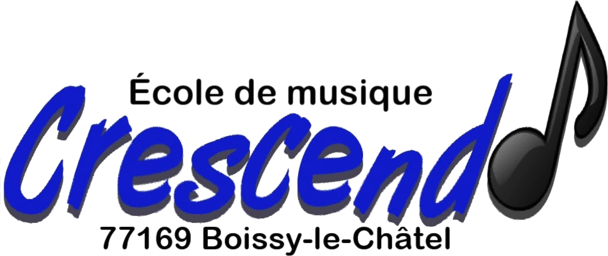

Apprenez, progressez, jouez !
Notre école de musique accueille les élèves dès 7 ans, débutants ou confirmés.
Encadrés par des musiciens expérimentés de l'harmonie, les élèves apprennent le solfège et la pratique instrumentale dans une ambiance conviviale et bienveillante.
L'objectif : permettre à chacun de progresser à son rythme et d'intégrer l'harmonie lorsqu'il se sent prêt. La musique d'ensemble est au cœur de notre pédagogie.
S'inscrire
L'instrument roi de l'harmonie, brillant et puissant.
Incontournable de l'harmonie, avec un son chaud et expressif.
Du soprano au baryton, polyvalent et apprécié de tous.
Légère et mélodieuse, idéale pour commencer.
Les cuivres graves, piliers de l'harmonie pour les basses.
Batterie, timbales, xylophone... Le rythme au cœur de la musique.
Salle des fêtes de la commune, accessible et équipée pour la pratique musicale.
Parking gratuit à proximité
Les inscriptions sont ouvertes toute l'année. Venez essayer gratuitement un cours avant de vous engager !
Nous contacter